Module 1
Introduction to Sailing
Discover what sailing is, how sailboats move, and why sailing has fascinated people for thousands of years.
Learning Objectives
After completing this lesson, you should be able to:
- Explain what sailing is.
- Describe how a sailboat moves without an engine.
- Identify the four basic forces acting on a sailboat.
- Understand why sailing is both a science and a sport.
What is Sailing?
Sailing is the art of using the wind to propel a boat across the water. Instead of relying on an engine, a sailboat uses sails to capture the wind's energy and convert it into forward motion.
Sailing is one of the oldest forms of transportation known to mankind. Today, it is enjoyed for recreation, racing, adventure, and travel.
How Does a Sailboat Move?
At first glance, it may seem impossible for a boat to move in almost any direction using only the wind. The secret lies in the shape of the sail, which acts much like an airplane wing.
As the wind flows around the sail, it creates aerodynamic lift. The centerboard and rudder work together to prevent the boat from sliding sideways, allowing much of this force to be converted into forward motion.
The Four Basic Forces
🌬 Wind Force
The wind provides the energy that powers the sailboat.
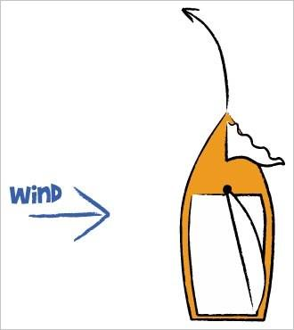
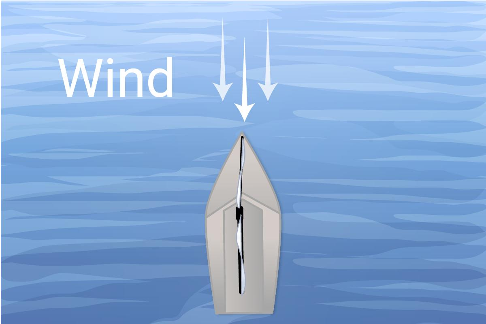
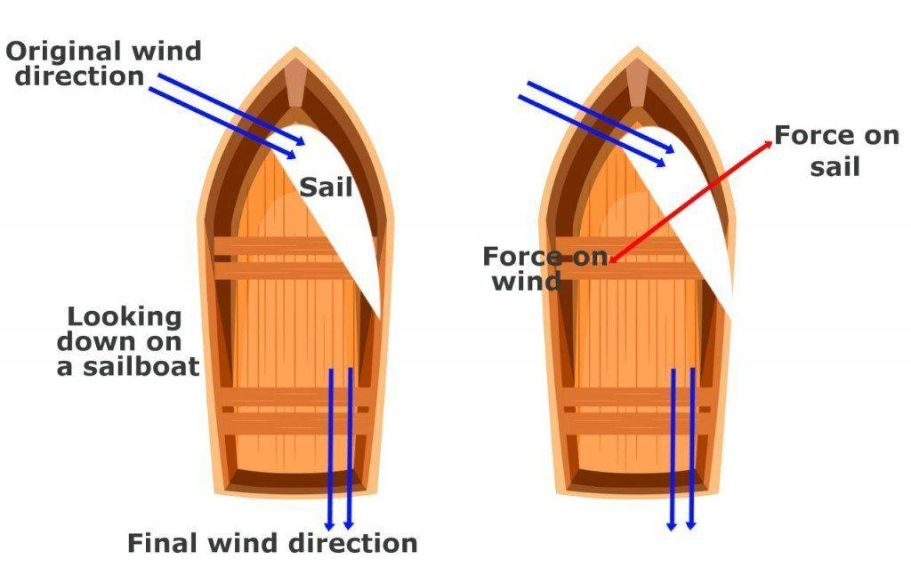
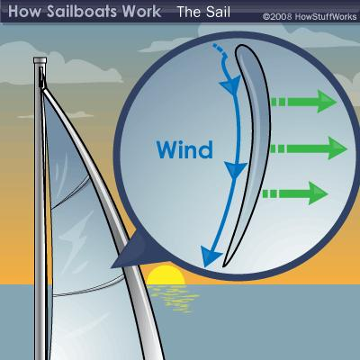
⛵ Lift
The sail converts the wind into useful driving force. A properly trimmed sail acts somewhat like an airplane wing. As wind flows around the curved sail, it creates a pressure difference that produces lift. Part of this force helps drive the boat forward, while another part pushes the boat sideways.
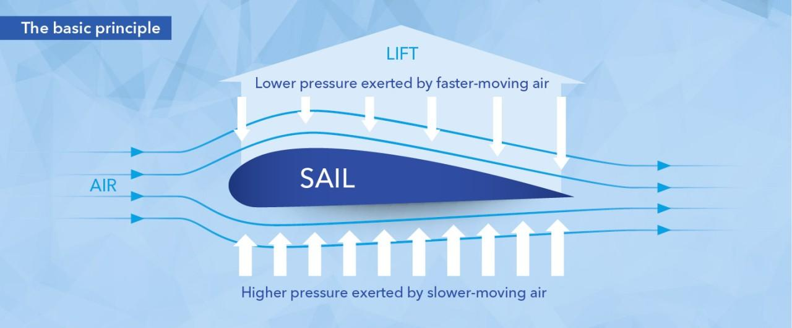
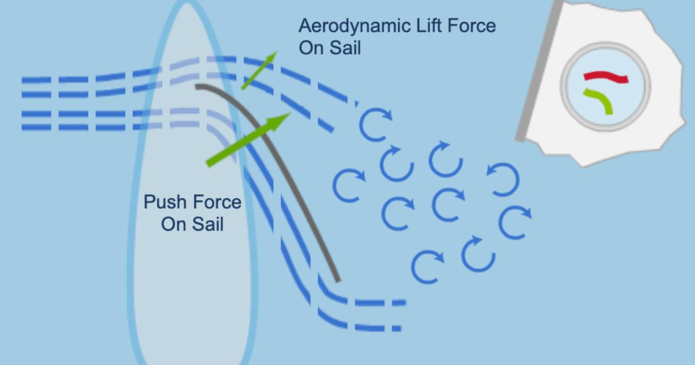
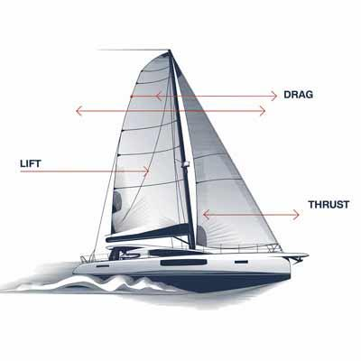
🌊 Hull Resistance
Water resists the movement of the hull through the water. As a dinghy moves through the water, its hull must push water aside. The water resists this movement. Friction between the hull and water, together with the waves created by the hull, slows the boat down.
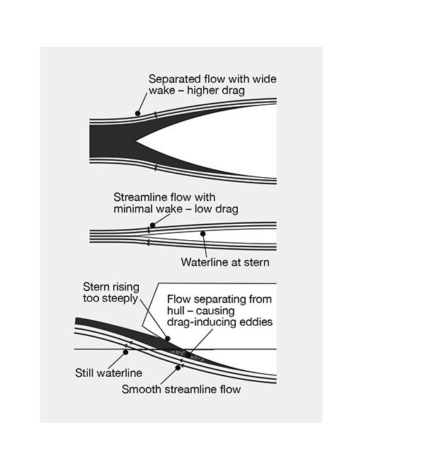
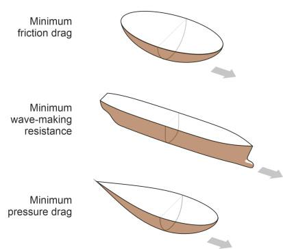
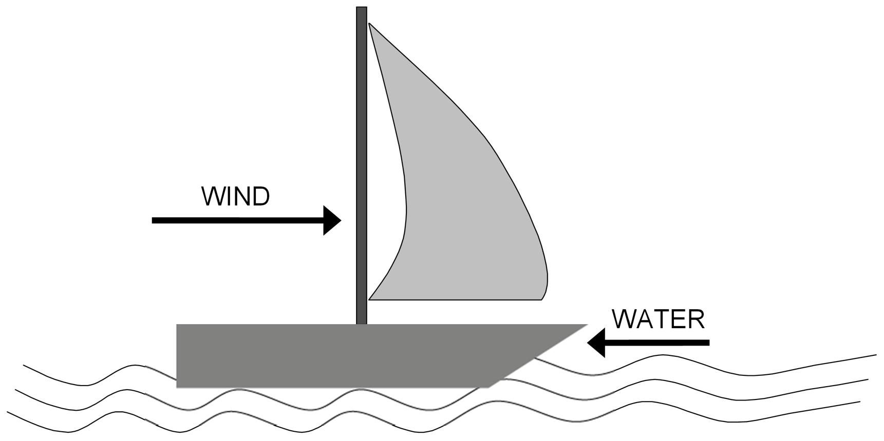
↗ Side Force
The centerboard reduces sideways movement so the boat can move efficiently forward.
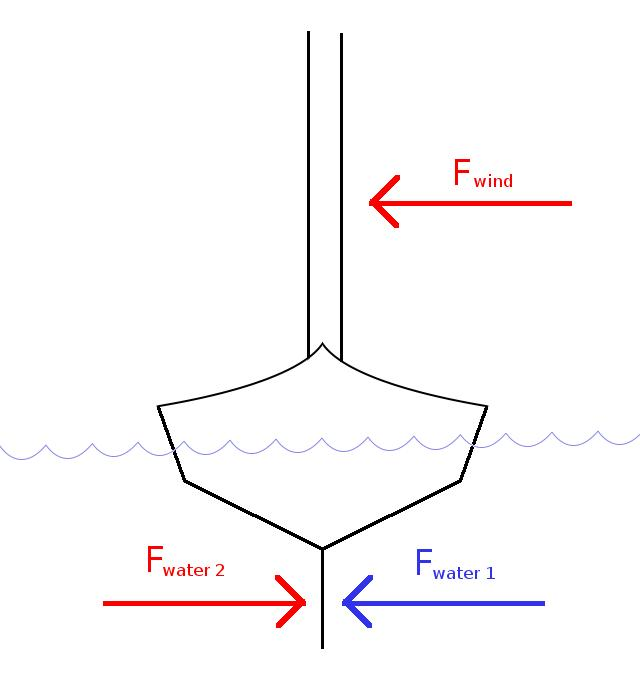
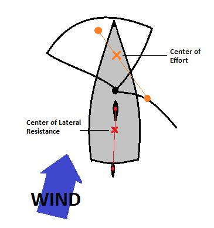
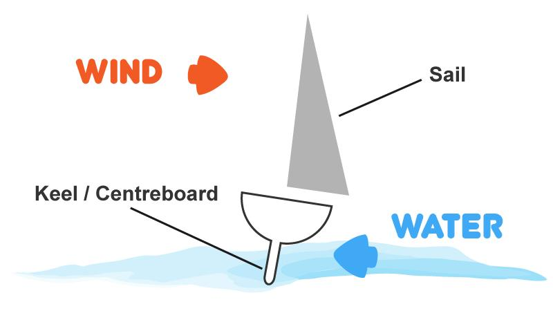
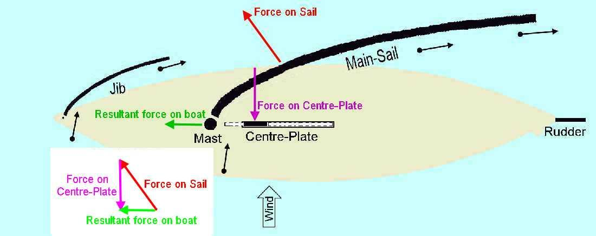
Key Takeaways
- The wind is the sailboat's engine.
- Sails generate lift, not just push.
- The centerboard is essential for sailing upwind.
- Almost every lesson in this course builds upon these principles.